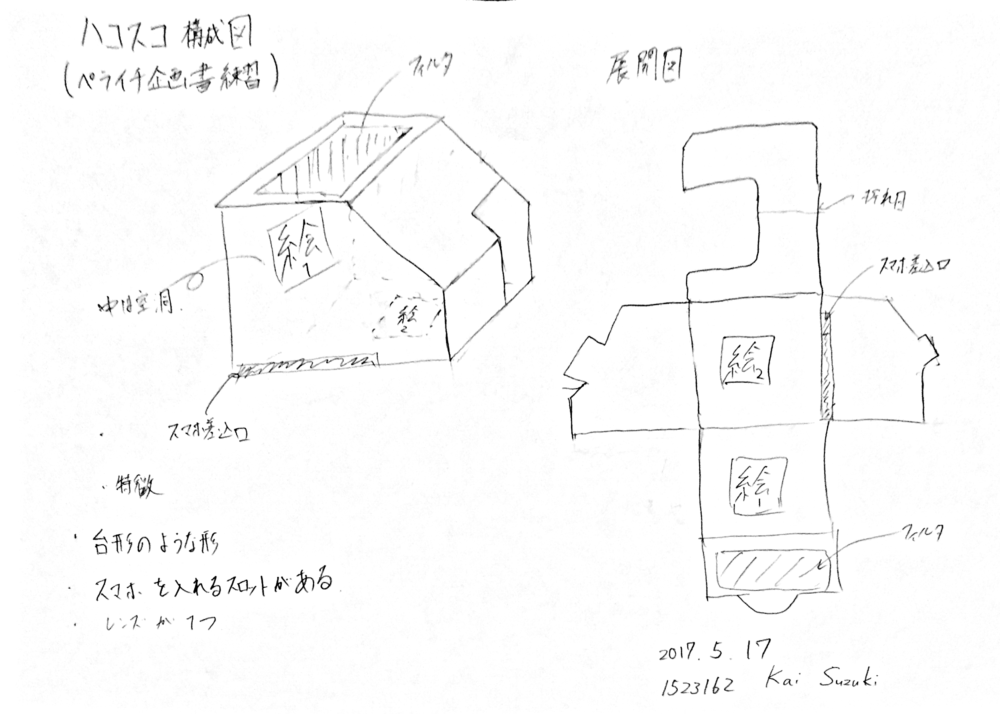
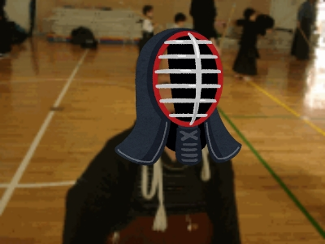
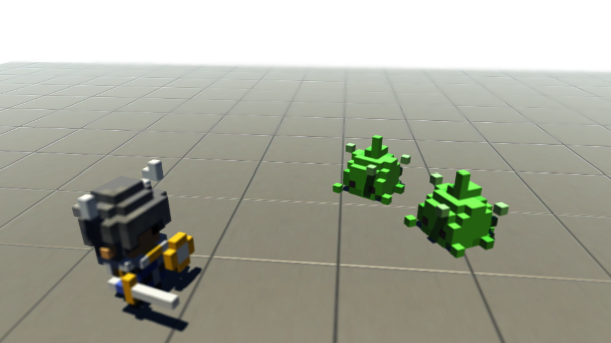

News
-
山本晴貴 wrote a new post, Part3 ラフ画まとめ―山本晴貴―, on the site 白井研セミナー 3年前
こんにちは、山本です。
～前回を振り返って～
前回のセミナー(5/17)では、伝えるためのラフ画の描き方について学びました。
ラフ画とは、「伝える」ための絵と言う事でとにかく、如何に早く、分かりやすく描くかを意識して描いていきました。
まずは一番難易度の低い直方体から描きました。
次に、円柱。
そして、最後に円柱で構成した人間を描きました。
私自身、絵が趣味なので少しばかりイラストに対する心[…]

-
kai wrote a new post, 絵がまったく描けない？そんな時のお絵かきメソッド！！, on the site 白井研セミナー 3年前
みなさん、こんにちは。
白井研究セミナーの鈴木です。
最近だいぶ暑くなってきましたね～（汗）
だけど、夜はちょっぴり涼しいので服装に困る時期です。前回の5月17日のセミナーでは、急遽？白井先生によるお絵かき講座を行いました。
もともとはIVRCに向けたペライチ企画書の発表だったのですが、セミナー生の企画書を見た先生が「絵を描くためのメソッドを教えます！」と言って講座をやることになりました。これはお察しですね（笑）まずは[…] 
-
中村 凌雅 wrote a new post, Part3 描くメソッド（中村凌雅）, on the site 白井研セミナー 3年前
こんにちわ。中村です。
当ブログも3回目になります。
今回のセミナーでは、ペライチ企画の発表を行う予定でしたが・・・
白井准教授：皆さん画力がないですねぇ。お絵かきしましょうか。
お絵かきすることになりました。
さて、お絵かきするにあたって、まず、教えていただいたのが、鉛筆の使い方です。
鉛筆は文字を書く時より長めに持つ。
描く時は鉛筆を寝かす。芯を常にとがらせることを意識しながら、回しつつ描く。[…]

-
武藏島 雄理 wrote a new post, 2番：如何に見せるか見させぬかのIVRC_武藏島雄理, on the site 白井研セミナー 3年前
こんにちは。武藏島です。
今回はIVRC（国際学生対抗バーチャルリアリティコンテスト）で今までに出場した作品を調べましたので報告します。
よろしくお願いします。
まず、VRといったらテレビなどでは「VR元年」と盛り上がり、現在でもヘッドマウントディスプレイ（以下HMD）を使用した立体映像や360°視点が売りの作品が多くみられます。。
私自身もHMDを使用した没入感や立体視のある作品に憧れを抱いていました。
しか[…]

-
石井雄大 wrote a new post, Part.1 エゴサーチしてみたら…, on the site 白井研セミナー 3年前
初めまして、情報学部情報メディア学科の石井雄大と申します。
今回セミナーの課題でエゴサーチをすることになったので、
その結果を書き留めたいと思います。
まずエゴサーチしてみた結果(2ページ途中まで)を画像でざっと流します。
序盤に出てきたのはSNSの本名アカウント。
当然ながら自分の実名アカウントはこの中にありません。
自分は実名公開したら世間的に死んでしまう気がするので、
絶対に[…] 
-
Rex HSIEH wrote a new post, 5月18日集英社の相談, on the site Rex's Japan Adventure 3年前
5月18日に白井研究室の全員を日本で最も有名マンガ雑誌「ジャンプ」の「集英社」本社にてとあるプロジェクトの打ち合わせをするために向かいました。集英社の場所は神保町駅付近です。その日私と白井先生と山口と浅野は神奈川県工科大学前のバス停をバスで出発して、本厚木駅で電車を乗って、新宿駅でもう一回電車を乗り換えて、そして神保町駅で他にのメンバーと合流して、一緒に集英社へ行きました。
集英社の入り口が様々な漫画についての製品があ […]

-
Rex HSIEH wrote a new post, ロータリー米山団体鎌倉市の旅行, on the site Rex's Japan Adventure 3年前
5月13日に僕はロータリー米山の団員と一緒に鎌倉市へ旅行に行きました。私は11時に本厚木駅から出発して、海老名駅で列車を乗り換えて、鎌倉駅で団体員と合流して、鎌倉市へ観光しに行きました。その日は雨が降っていたので、僕はあそこへ行った唯一の学生でした。しかしそのおかげで、僕が他にの団員を沢山話せました。
この旅行のガイドさんは鎌倉市市役所で35年に働いたの磯崎さんです。彼は今は幼稚園の先生です。それに私のロータリー米山団 […]

-
-
-
山本晴貴 wrote a new post, Part1 エゴサーチ結果まとめ, on the site 白井研セミナー 3年 1か月前
1523170[…]

-
kai wrote a new post, 過去3年分調べてみた ～私のおすすめするIVRC作品！～, on the site 白井研セミナー 3年 1か月前
みなさん、こんにちはー。
白井研究セミナー3年の鈴木翔偉です。前回のセミナーでは、各自年度ごと調べてきたIVRC作品を紹介しあいました。
今日は、私が調べた年、1996年、2001年、2014年の中から面白そうだと思った
作品を紹介していこうと思います！私が興味を惹いたIVRC作品の紹介
まず一番面白いと思ったものは、IVRC2014年総合優勝作品
『チャイルドフード』 シャピニオン /筑波大学
IVR[…]

-
山本晴貴 wrote a new post, Part2 IVRC「経験値」の創造―山本晴貴―, on the site 白井研セミナー 3年 1か月前
こんにちは、山本です。二回目という事で、少しコツが掴めてきたかな、と感じています。
～前回を振り返って～
前回のセミナー(5/10)で、IVRCの過去の作品達を見ていきましたが、最近ようやく世間に認知されだしたHMDを当たり前のように使っていたり、ARの前身のような作品があったりと、まさに次世代機の先駆者と言った作品ばかりで、最先端の最先端といった感じでした。実際、10年以上前にIVRCに参加していた学生達が、[…] 
-
近藤 優生 wrote a new post, 僕について知りたい…知りたくない？, on the site 白井研セミナー 3年 1か月前
こんにちは。近藤優生です。
第一回白井セミナー課題。
今回はエゴサーチを行った[…]

-
-
kai wrote a new post, 世界から見た僕って？～エゴサーチ結果～, on the site 白井研セミナー 3年 1か月前
1.はじめに
みなさん、こんにちは。
前期白井セミナー配属となりました鈴木です。今回は白井研究セミナーの一環として、エゴサーチを行っていきたいと思います。
ん？？エゴサーチってそもそも何？って思った方。
エゴサーチとは、インターネット上で自分の本名やハンドルネーム、運営しているサイト名やブログ名で検索して自分自身の評価を確認する行為(Wikipediaより)
のことを言います。
インターネット上限定での評価です[…]

-
-
黒澤優輝 wrote a new post, 個人的IVRCベスト3, on the site 白井研セミナー 3年 1か月前
こんにちは(^_^)/ 黒澤優輝です。
今回は、IVRCというコンテストについて、自分が調べた年以外で特におもしろそうだと思った作品3つを紹介したいと思います。
まずは第3位
2010年に発表された「Immersive Rail Shooter」です。
フランスの「L’Ecole de Design Nantes Atlantique」というチームが発表した作品で、
テーブルやいすを盾として利用してシュー[…]

-
中村 凌雅 wrote a new post, Part2 IVRCに向けて #IVRC アーカイブ調査から見えたものは…？資料公開あり（中村凌雅）, on the site 白井研セミナー 3年 1か月前
こんにちわ。中村です。
2回目のブログ投稿になります。
IVRCアーカイブ調査
さて、セミナーではIVRCに向けて企画書を書くことに。
そのために、過去の作品を調査し、スライドにまとめることになりました。
そんなわけで今回のテーマは、IVRCアーカイブ調査です。
興味を引かれたものだけ簡単にですが、さっそく。
自分的に興味を引いたものを紹介
2013年の優勝作品「バーチャルロープスライダー」です。[…]

-
中村 凌雅 wrote a new post, Part1 自分探し（中村凌雅）, on the site 白井研セミナー 3年 1か月前
初めまして。中村凌雅です。
ブログ書き方はわからないですがとりあえずはそれっぽく。
簡単な自己紹介から
名前は中村凌雅です。
一応、日本Androidの会学生部に所属していていろいろ活動しています。
最近だとAndroid Baz aar and Conference 2017 Spring、
略して、ABC2017春に向けてプロジェクトリーダー務めてたりします。
趣味はゲームで、Android向けのアプリ[…]

-
shirai wrote a new post, 2017年度3年前期セミナー開始です, on the site 白井研セミナー 3年 1か月前
今期はVRエンタテイメントシステムやりたい人が多く、選出となりました。ヤル気に満ち溢れている感じです。ご活躍を期待しております。

- もっと読み込む